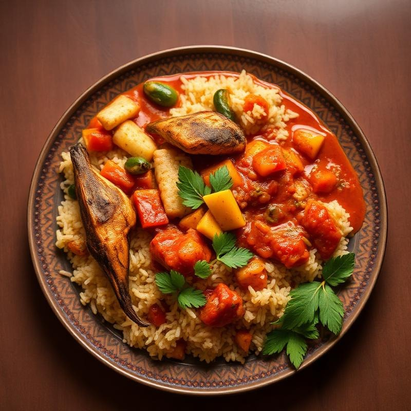
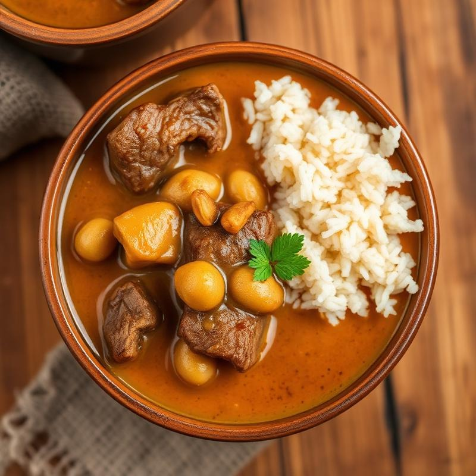

Nos Spécialités
Saveurs du Sénégal
Découvrez nos plats traditionnels préparés selon les recettes authentiques transmises de génération en génération.

1500 fcfa
1000 fcfa 2000 fcfa
2000 fcfa
1000 fcfa